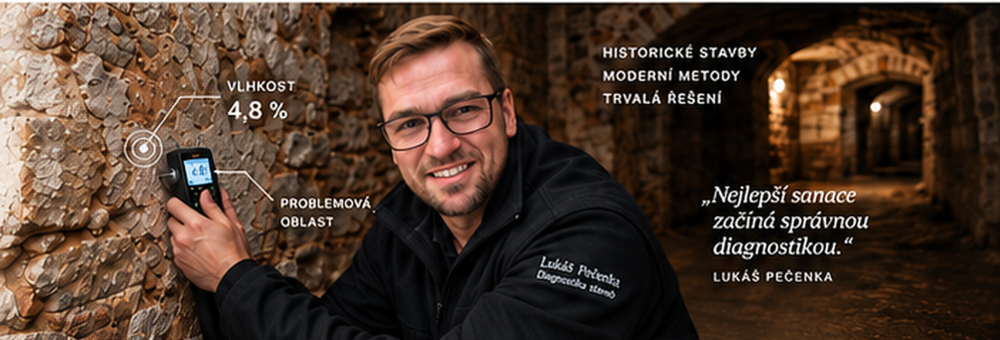
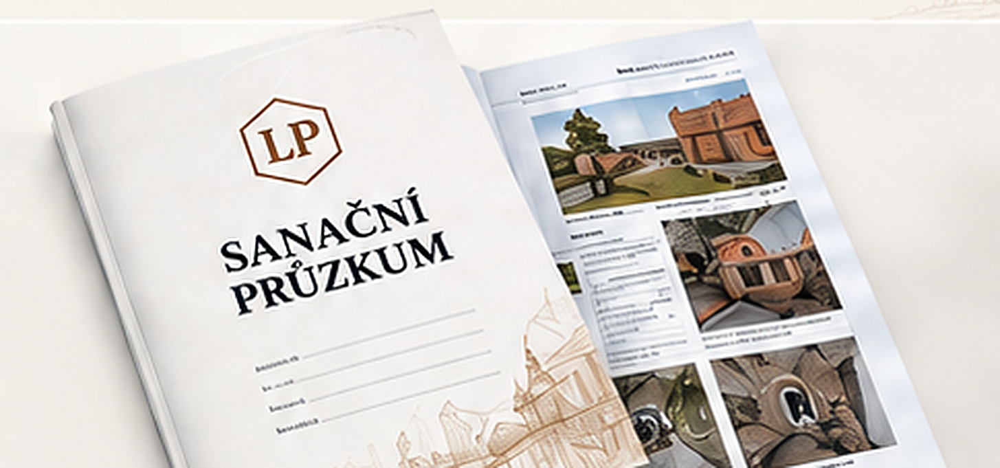
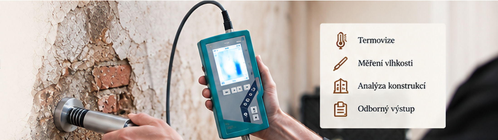

01
Popíšete problém
Zavoláte nebo vyplníte poptávku a přiložíte fotografie.

Než začnete sanovat, zjistěte skutečnou příčinu vlhkosti.
Stavbu odborně proměřím, vyhodnotím a navrhnu řešení,
které bude fungovat dlouhodobě.
Zavoláte nebo vyplníte poptávku a přiložíte fotografie.
Upřesníme rozsah, termín a cenu průzkumu.
Proměřím vlhkost, odeberu vzorky a vše zdokumentuji.
Výsledky, příčiny vlhkosti a doporučená technologie.
Podle návrhu se domluvíme i na provedení sanace.
Dostanete písemnou zprávu o více než 20 stranách
s výsledky měření, fotodokumentací a návrhem řešení.


Jako jeden z mála v Česku měřím mikrovlnným
systémem MOIST 350 I. Sken ukáže vlhkost až 80 cm
hluboko ve zdi – výsledek vidíte přímo na místě.
Popište ho a pošlete fotografie.
Ozvu se vám a domluvíme další postup.